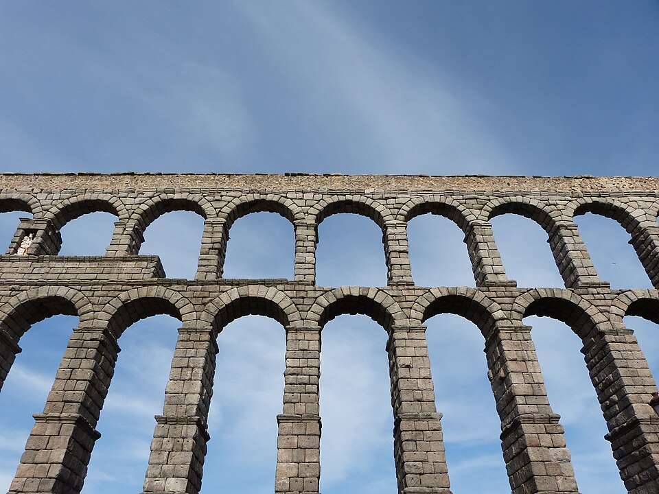
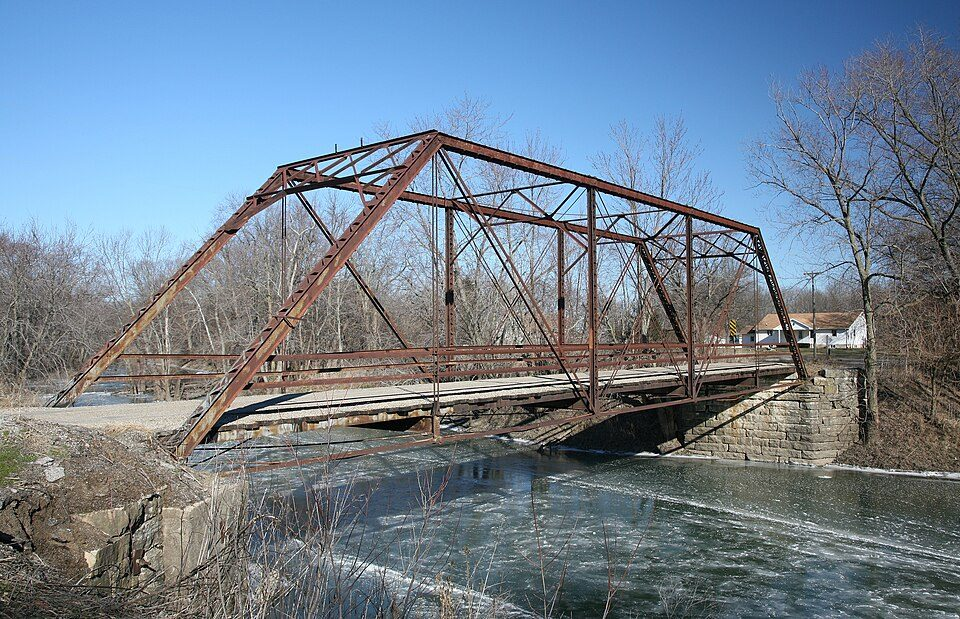

Por qué no se cae: los cinco esfuerzos
Una estructura no aguanta porque sea fuerte. Aguanta porque reparte.
Mira el edificio más alto que se vea desde la ventana. Ahora piensa en un temporal de los de verdad.
¿Por qué no se cae? Contéstalo por escrito antes de seguir.
La respuesta habitual es «porque es muy fuerte» o «porque tiene mucho hormigón». Y no es eso: hay torres eléctricas que están casi huecas, pesan una fracción de lo que parece, y aguantan vendavales año tras año.
No aguanta porque sea fuerte: aguanta porque reparte
Vídeo y voz propios, hechos con manim. La foto de la torre es de HighVoltage 5576, Wikimedia Commons (CC0).
La misma carga con la sexta parte del hierro
Tres soluciones para el mismo encargo —6 m de luz y 5 toneladas en el centro— con el mismo acero:
- Barra maciza de 68 × 204 mm: 651 kg.
- Viga en I (perfil IPE 300): 253 kg.
- Celosía de 600 mm de canto: 108 kg.
La celosía aguanta lo mismo con la sexta parte del hierro. No es que sea más fuerte: es que coloca el material donde trabaja y lo quita de donde no.
Cuando una viga se dobla, la cara de arriba se acorta y la de abajo se estira. Justo en el medio hay una línea que ni se estira ni se acorta: ahí el acero no hace nada, solo pesa. Por eso la viga en I vacía el centro, y por eso la celosía lo vacía casi entero.
Y hay una segunda cosa: cuanto más separas el material, menos fuerza le toca a cada parte. Al pasar de 204 mm de canto a 600, el tirón en cada cordón baja tanto que puede ser tres veces más fino. Esa es la razón de que las grúas y las torres eléctricas sean enormes y a la vez ligeras.
Las cuentas están hechas con acero trabajando a 160 N/mm². En una obra real la celosía sube algo de peso por los nudos y porque el cordón comprimido hay que engordarlo para que no pandee, pero la diferencia sigue siendo enorme.
Cuando una fuerza llega a una estructura, no se queda donde llega. Cada pieza se la pasa a la siguiente y la conduce hasta el suelo. Y según cómo esté colocada, cada pieza sufre un tipo distinto de esfuerzo.
Los cinco esfuerzos
- Tracción: la alargan.
- Compresión: la acortan o aplastan. Si es larga y delgada, pandea.
- Flexión: la curvan. Es compresión arriba y tracción abajo a la vez.
- Torsión: la retuercen sobre su eje.
- Cortadura: tienden a cortarla, como unas tijeras.
Estructura: conjunto de elementos que soporta las cargas de un objeto y las conduce hasta el suelo sin romperse ni deformarse demasiado.
El truco que lo cambia todo: triangular
Vídeo propio, hecho con manim, con voz propia. Es material de la web, bajo la misma licencia. Las dos fotos del final proceden de Wikimedia Commons: torre de alta tensión de HighVoltage 5576 (CC0) y «Paris, Eiffelturm 2014» de Dietmar Rabich (CC BY-SA 4.0).
Triangulación
El triángulo es la única figura indeformable con barras articuladas: fijados los tres lados, los tres ángulos quedan determinados y no hay otra forma posible.
Triangular una estructura es dividirla en triángulos con barras diagonales, llamadas tirantes o riostras. Es lo que ves en las torres eléctricas, las grúas, las cerchas de los tejados y la Torre Eiffel.
Que la torsión no es un detalle menor lo demostró el puente de Tacoma Narrows. Se abrió al tráfico el 1 de julio de 1940, con un vano central de 853 metros y un tablero estrecho rigidizado con vigas macizas en lugar de celosías trianguladas.
El 7 de noviembre de ese mismo año, con un viento de unos 68 km/h —una ventolera de otoño, nada excepcional—, el tablero entró en oscilación de torsión, se retorció durante más de una hora y se hundió. No hubo víctimas humanas.
El puente estaba calculado para vientos muy superiores. El fallo estuvo en la forma, no en la fuerza. El que se construyó en su lugar cambió aquellas vigas macizas por celosías trianguladas abiertas, que dejan pasar el aire. Sigue en servicio.
Qué hay que hacer
Material: cinco folios y 50 cm de cinta. Nada más.
- Construid la torre más alta posible que aguante un libro de texto encima durante un minuto.
- Antes de empezar, dibujad el diseño y señalad qué esfuerzo sufre cada pieza.
- Al terminar, medid la altura y anotad por dónde ha fallado si ha fallado.
- Si se ha doblado una pieza vertical, decid si fue por aplastamiento o por pandeo.
Cómo se evalúa
- El diseño previo está dibujado y con los esfuerzos señalados (3 puntos).
- La torre aguanta el libro (2 puntos).
- Hay triangulación y se justifica dónde y por qué (3 puntos).
- El análisis del fallo es correcto (2 puntos).
Vuelve al rascacielos. Ya puedes contestar sin decir «porque es fuerte»: no vuelca porque el empuje del viento se reparte entre todas sus piezas y baja hasta el suelo, y porque su estructura está pensada para que ninguna pieza reciba más de lo que puede.
- ¿Por qué el triángulo es indeformable y el cuadrado no?
Ver respuesta
Porque fijados los tres lados de un triángulo, los tres ángulos quedan determinados. Un cuadrado, en cambio, se desploma en rombo sin que sus lados cambien de longitud.
- ¿Qué es el pandeo y en qué esfuerzo aparece?
Ver respuesta
Aparece en compresión. Una pieza larga y delgada comprimida no se aplasta: se dobla de golpe hacia un lado. Por eso los pilares altos son gruesos.
- La flexión es en realidad dos esfuerzos a la vez. ¿Cuáles?
Ver respuesta
Compresión en la cara que se acorta y tracción en la que se estira. Por eso una viga de hormigón lleva las barras de acero abajo: es donde se estira, y el hormigón no aguanta tracción.
Las seis familias: por qué cada una tiene esa forma
La forma no se elige por gusto: se elige para que el material trabaje en el esfuerzo que aguanta.
Tienes que cruzar un barranco de 40 metros para llegar al otro lado. No hay rodeo: o se cruza, o no se llega.
En el almacén hay tres cosas, y solo tres:
- Sillares de piedra, los que quieras.
- Vigas de madera de 5 metros.
- Cable de acero, todo el que haga falta.
Casi todo el mundo tropieza en el mismo sitio: dibuja una losa de piedra de 40 metros apoyada en los dos bordes, y la hace más gruesa hasta que «seguro que aguanta».
Esa losa no se rompe por arriba: se rompe por abajo, y por el centro. Al doblarse, la cara inferior se estira, y la piedra se lleva fatal que la estiren: aguanta aplastada como una campeona y se parte a la tracción con una facilidad ridícula. Hacerla más gruesa solo añade peso, que es justo el problema.
Así que la pregunta de verdad no es «¿qué forma me gusta?», sino esta:
La pregunta del barranco tiene una respuesta distinta con cada material, y no por capricho:
- La piedra aguanta aplastada y se parte estirada → hay que darle una forma en la que nunca la estiren: el arco.
- El cable de acero no puede empujar, solo tirar → hay que colgar de él: el puente colgante.
- La madera de 5 metros no llega a 40 → hay que hacer una malla de piezas cortas que se ayuden: una celosía.
Eso es lo que hay detrás de la clasificación que viene ahora. No son seis formas que a alguien le parecieron bonitas: son seis maneras distintas de repartir, cada una pensada para un material y un esfuerzo.
Las seis familias de estructuras
- Masiva: mucho material sin huecos, todo comprimido. Presas, murallas.
- Abovedada: arcos y bóvedas que ponen la piedra a compresión. Empujan hacia fuera y necesitan contrafuertes. Acueductos.
- Entramada: pilares comprimidos y vigas flexionadas. Los edificios.
- Triangulada: barras en triángulo; cada una solo se estira o solo se comprime. Grúas, torres, cerchas.
- Colgante: el tablero cuelga de cables que trabajan a tracción pura.
- Laminar: láminas finas que aguantan por su forma curvada o plegada. Carrocerías.
La regla que las ordena
Cada material aguanta bien un esfuerzo y mal otro. La forma de la estructura se elige para que el material trabaje solo en el esfuerzo que aguanta.
Código de color de la unidad: azul = pieza comprimida, rojo = pieza estirada, naranja = fuerza que llega de fuera.
Las tres en la realidad


Véalo después de la escena, no antes: la gracia está en que reconozcas las familias que ya has visto. Ve anotando un ejemplo nuevo de cada una que no hayamos nombrado aquí.
El vídeo no se carga hasta que lo pulsas, y se reproduce sin cookies de seguimiento. Si la red del centro bloquea YouTube, ábrelo directamente aquí. El vídeo es de su autor y no forma parte del material publicado bajo la licencia de esta página.
Las familias se mezclan constantemente. Un puente colgante tiene cables a tracción, torres comprimidas y un tablero que suele ser una celosía. Un estadio moderno tiene pilares de hormigón, cerchas trianguladas y una cubierta laminar. Clasificar sirve para entender qué hace cada parte, no para meter cada edificio en una sola caja.
Primera parte: notarlo con las manos (7 min)
Material: dos libros gruesos y una cartulina.
- Poned la cartulina plana entre los dos libros, como un puente. Dejad caer un estuche encima: se hunde.
- Ahora curvad la cartulina en arco, con los extremos apoyados en la mesa y los libros a los lados sin tocarla. Volved a poner el estuche encima.
- Separad los libros poco a poco. Anotad qué pasa y por qué.
Segunda parte: el catálogo del instituto (13 min)
Buscad cuatro estructuras del edificio o de lo que se ve por la ventana y rellenad esta tabla en la libreta:
- Qué es y dónde está.
- A qué familia pertenece.
- Qué esfuerzo domina en su pieza principal.
- Por qué esa forma y no otra: qué material es y qué aguanta ese material.
Cómo se evalúa
- El experimento del arco está anotado y la explicación del empuje es correcta (4 puntos).
- Las cuatro estructuras están bien clasificadas (3 puntos).
- La columna del «por qué esa forma» relaciona material y esfuerzo (3 puntos).
Vuelve al barranco. Ya puedes contestar las tres, y con un motivo en cada una: con piedra, un arco; con cable, un colgante; con maderas cortas, una celosía.
- ¿Por qué los romanos hicieron arcos en vez de poner losas de piedra?
Ver respuesta
Porque una losa apoyada se estira por su cara inferior, y la piedra no aguanta tracción. El arco obliga a que todas las piezas estén comprimidas, que es lo que la piedra hace de maravilla.
- Un arco aguanta, pero hace algo molesto en sus apoyos. ¿Qué?
Ver respuesta
Empuja hacia fuera. Si no hay contrafuertes, muros gruesos o un tirante que lo sujete, el arco se abre y se cae.
- ¿Por qué no se hacen puentes colgantes de piedra?
Ver respuesta
Porque en un colgante los cables trabajan a tracción pura, y la piedra se parte estirada. Solo sirve un material que aguante tirones: el acero.
El mismo acero, doce veces más aguante
Con la misma cantidad de material, lo que decide es dónde lo pones. La regla de canto lo demuestra en dos segundos.
Saca una regla de plástico del estuche y haz estas dos cosas, en este orden:
- Suétala por los dos extremos en horizontal, plana, y aprieta hacia abajo en el centro. Se dobla como si nada.
- Ahora gírala 90 grados y suétala de canto. Vuelve a apretar igual de fuerte.
Contéstalo por escrito antes de seguir. Y ojo con la respuesta fácil: no vale decir «porque de canto es más gruesa», porque de canto es exactamente igual de gruesa que antes. Lo que ha cambiado es en qué dirección está repartido el material.
Esto ya lo has visto en la sesión 1, aunque no con este nombre: la celosía aguantaba lo mismo que la barra maciza con la sexta parte del hierro porque separaba el material. Aquí pasa lo mismo, pero dentro de una sola pieza.
Cuando una pieza se dobla, no todo su material sufre lo mismo. La cara de arriba se acorta, la de abajo se estira, y justo en medio hay una línea que no hace ni lo uno ni lo otro. Esa línea se llama eje neutro, y el acero que está pegado a ella no está trabajando: solo pesa.
De ahí sale toda la sesión: si el material que está cerca del eje no sirve de nada, quítalo de ahí y ponlo lejos. Mira las cuatro secciones siguientes. Las cuatro llevan exactamente el mismo acero, 400 mm², o sea 3,14 kg por metro.
Definiciones
Sección: la forma que se ve al cortar una pieza de lado a lado.
Eje neutro: la línea de la sección que, al flexionar la pieza, ni se estira ni se acorta. El material que está sobre ella casi no trabaja.
Perfil: pieza larga de sección constante que se fabrica en serie. Los hay en L, U, T, I, H, redondos, cuadrados y tubos.
La regla de esta sesión
Con la misma cantidad de material, una pieza aguanta más a flexión cuanto más lejos del eje neutro esté colocado ese material.
Los cuatro casos, con 400 mm² de acero cada uno
- Cuadrado macizo 20 × 20 → × 1
- Pletina de canto 10 × 40 → × 2
- Tubo cuadrado 40 × 40 → × 3,5
- Perfil en I de 107 mm de canto → × 12
Esto tiene un límite, y conviene saberlo para no decir tonterías. Si el alma del perfil se hace cada vez más fina, llega un momento en que la chapa se abolla como un papel arrugado antes de que el acero llegue a su tensión. Por eso los perfiles de catálogo de verdad no llegan a las proporciones de la escena: son un poco más gorditos, a propósito.
Y la misma idea explica una cosa que ves todos los días: una lata de refresco vacía aguanta de pie el peso de una persona y se aplasta con dos dedos apretando el lateral. La chapa es la misma; lo que cambia es si la estás cargando en la dirección en la que su forma trabaja o en la que se abolla.
Los perfiles que verás en cualquier obra
Qué hay que hacer
Material por pareja: tres folios, cinta y los libros de clase.
- Poned un folio plano de pie entre dos mesas separadas 15 cm. Se cae solo.
- Con el segundo folio haced un tubo de unos 4 cm de diámetro y pegadlo. Ponedlo de pie y colocad libros encima de uno en uno. Anotad cuántos aguanta.
- Con el tercero haced un acordeón de pliegues de 1 cm, en zigzag. Repetid la prueba y anotad cuántos libros aguanta.
- Pesad los tres folios: pesan lo mismo. Escribid por qué aguantan cosas tan distintas.
Segunda parte: elegir perfil
Para cada encargo, decid qué perfil pondríais y por qué:
- La viga que sujeta el techo de un garaje de 5 metros.
- El cuadro de una bicicleta.
- Las diagonales de una torre eléctrica.
- El carril por el que corre una puerta corredera.
Cómo se evalúa
- El ensayo está hecho y los resultados anotados con números (3 puntos).
- La explicación usa el eje neutro y no solo «es más fuerte» (4 puntos).
- Los cuatro perfiles elegidos están justificados (3 puntos).
Vuelve a la regla del principio. Ya tienes la respuesta buena: de canto, el plástico está lejos del eje neutro, y ahí es donde el material trabaja. Plana, está todo apelotonado junto al eje, donde no sirve de nada.
- ¿Por qué una viga en I aguanta 12 veces más que un cuadrado macizo del mismo peso?
Ver respuesta
Porque lleva casi todo el acero en las alas, lo más lejos posible del eje neutro, que es donde el material de verdad trabaja. El cuadrado lo tiene todo amontonado junto al eje.
- Si el truco es alejar el material del eje, ¿por qué no se hacen las almas finas como un pelo?
Ver respuesta
Porque una chapa demasiado fina se abolla antes de que el acero llegue a su límite. Hay un punto en el que afinar más deja de compensar.
- ¿Por qué el cuadro de una bici es de tubo y no de pletina?
Ver respuesta
Porque una bici recibe esfuerzos desde muchas direcciones y además torsión. La pletina solo aguanta bien en un plano; el tubo aguanta parecido en todos y es el mejor a torsión.
Puede estar todo bien calculado y caerse igual
Volcar no es romperse. Es otro examen, y tiene sus propias reglas: dónde está el peso y dónde se apoya.
Coge la botella de agua que tengas en la mesa, llénala del todo y ponla de pie. Ahora inclínala despacio, sin soltarla, hasta que notes que ya no volvería sola. Marca hasta dónde llega.
Vacíala hasta la mitad y repite. Y luego con un dedo de agua.
Casi todo el mundo dice que la llena, porque pesa más y «pesa más, agarra más». Y es al revés: la de media botella aguanta más que la llena.
Esto es un tema distinto de los tres anteriores, y merece la pena verlo. Hasta ahora el peligro era que algo se rompiera: una barra que se parte, un pilar que pandea. Aquí no se rompe nada. La botella cae entera.
Una estructura puede tener todas sus piezas perfectamente calculadas y caerse igual, porque se vuelca. Es otro problema, con otras reglas, y las reglas no son de resistencia: son de dónde está el peso y de dónde se apoya.
Lo primero es ponerle nombre a las dos cosas que deciden si algo vuelca.
Definiciones
Centro de gravedad (CDG): el punto por el que se puede considerar que pasa todo el peso de un cuerpo. No tiene por qué estar dentro del material: el de un aro está en el aire, en su centro.
Base de sustentación: la superficie que queda encerrada al unir todos los puntos de apoyo. La de una silla de cuatro patas es el rectángulo que las une, no las cuatro patas sueltas.
La regla del vuelco
Un cuerpo no vuelca mientras la vertical que pasa por su centro de gravedad caiga dentro de su base de sustentación. En cuanto se sale, vuelca.
De esa regla sale directamente cuánto se puede inclinar algo antes de caerse. Si la base mide b y el centro de gravedad está a una altura h:
Prueba tú mismo con la rampa: elige un objeto y ve inclinando.
Las cuatro maneras de que algo vuelque menos
- Ensanchar la base. Las patas de una grúa móvil se despliegan antes de trabajar.
- Bajar el centro de gravedad. Un autobús lleva motor, depósito y baterías abajo.
- Añadir peso abajo (lastre o contrapeso). La quilla de un velero, el contrapeso de una grúa torre.
- Anclar al suelo o a la pared. Si no puedes con lo anterior, sujeta.
Vuelve a la botella. Llena, el agua está repartida hasta arriba y el centro de gravedad queda alto. A media botella, todo el agua está abajo y el CDG baja mucho: aguanta más inclinación. Y casi vacía vuelve a empeorar un poco, porque lo que pesa entonces es el plástico, repartido por toda la altura.
Y ojo con una idea que parece de sentido común y es falsa: el peso total no sale en la fórmula. Dos armarios idénticos, uno vacío y otro lleno de libros repartidos igual, vuelcan al mismo ángulo. Lo que importa no es cuánto pesa, sino dónde pesa.
Primera parte: predecir y comprobar (12 min)
Material: el estuche, un libro grueso, una botella y una regla. Como rampa, una carpeta apoyada en un taco.
- Para cada objeto, medid con la regla b (la anchura de su base) y estimad h (la altura de su centro de gravedad: en un objeto macizo y regular, la mitad de su altura).
- Calculad el ángulo de vuelco con la fórmula, antes de tocar nada.
- Poned el objeto en la carpeta y levantadla despacio hasta que vuelque. Medid el ángulo real: levantad la carpeta una altura A a una distancia L y usad tan α = A / L.
- Comparad el calculado y el medido. Si no se parecen, buscad por qué: casi siempre es que h estaba mal estimada, o que el objeto ha resbalado en vez de volcar.
Segunda parte: arreglar el armario (8 min)
Un armario de 0,40 m de fondo tiene el centro de gravedad a 0,90 m. Vuelca a 12°.
- ¿Cuánto habría que ensanchar la base para que aguantase 25°?
- Si en vez de eso se pudiera bajar el centro de gravedad, ¿a qué altura habría que dejarlo para conseguir esos mismos 25°?
- ¿Cuál de las dos soluciones es realista en un armario de verdad, y por qué?
Cómo se evalúa
- Las medidas y los cálculos previos están hechos y anotados (3 puntos).
- La comparación entre calculado y medido está razonada (3 puntos).
- Los dos cálculos del armario son correctos (3 puntos).
- Se distingue vuelco de deslizamiento (1 punto).
Ya tienes el mapa completo del tema. Una estructura tiene que superar dos exámenes distintos, y hay que aprobar los dos:
- Resistencia: que ninguna pieza se rompa ni pandee. Sesiones 1, 2 y 3.
- Estabilidad: que el conjunto no se vuelque. Esta sesión.
- ¿Por qué una grúa torre lleva ese bloque de hormigón detrás?
Ver respuesta
Es un contrapeso. Con la carga colgando por delante, el centro de gravedad del conjunto se iría fuera de la base y la grúa volcaría. El contrapeso lo devuelve dentro. Por eso su tamaño depende de cuánto se va a cargar y a qué distancia.
- Dos armarios iguales, uno vacío y otro lleno de libros repartidos por igual. ¿Cuál vuelca antes?
Ver respuesta
Ninguno: vuelcan al mismo ángulo. El peso total no aparece en la fórmula. Lo que decide es la base y la altura del centro de gravedad, y en los dos está a la misma altura.
- Una silla se aguanta sobre cuatro patas finas. ¿Cuál es su base de sustentación?
Ver respuesta
El rectángulo que une las cuatro patas, no la superficie de las patas. Por eso al inclinar la silla hacia atrás sobre dos patas la base se reduce a una línea, y basta muy poco para caerse.
El puente de 40 centímetros
Veinte palillos y un metro de cinta. La nota no es lo que aguante: es lo que aguante dividido por lo que pese.
Hasta ahora has analizado estructuras que ya estaban hechas. Hoy te toca al revés.
Y la nota no es el peso que aguante. Es esto:
Con esa regla, hacerlo más gordo no ayuda: sube el numerador, pero también el denominador. Gana quien coloque el material donde trabaja, que es exactamente lo que llevas cuatro sesiones viendo.
Esta forma de puntuar no es un invento para complicar: es la que se usa de verdad. En un puente real, la mayor parte de lo que aguanta se la come su propio peso. Cuanto más largo es, peor: un puente de 1.000 metros se sostiene a sí mismo a duras penas, y por eso los grandes son colgantes, que es la familia más ligera.
Antes de gastar un solo palillo, hay cuatro decisiones que ya sabes tomar. Son las cuatro sesiones de este tema, en orden:
Lista de comprobación antes de construir
- ¿Qué familia? Con palillos que trabajan bien a compresión y a tracción, y con uniones que giran, la respuesta casi siempre es triangulada.
- ¿Está todo triangulado? Ni un solo cuadrilátero suelto.
- ¿Qué sección? Un palillo solo pandea; dos pegados en L o tres en triángulo aguantan mucho más con poco más de peso.
- ¿Se vuelca? Un puente estrecho se tumba de lado. Hace falta arriostrarlo: unir las dos caras con barras transversales.
La segunda es la que más se falla, y es la que puedes probar aquí mismo. Pulsa dentro de cada cuadro para ir poniendo y quitando diagonales.
Contar barras no basta
Para que una celosía plana sea rígida hace falta que el número de barras más los apoyos llegue al doble del número de nudos. Pero eso es solo condición necesaria: si las barras están mal repartidas, la cuenta sale y la estructura se mueve igual.
La comprobación que sí vale es directa: busca cuadriláteros sin diagonal. Si hay uno, hay movimiento.
Cuando la escena dice que se mueve, no lo está adivinando ni lo lleva escrito. Monta la matriz de la estructura —una fila por barra, con la dirección en la que tira de sus dos nudos— y calcula cuántas de esas filas son independientes. Si faltan, existe un movimiento posible, y la animación que ves es ese movimiento, calculado, no dibujado a mano.
Es exactamente lo que hace un programa de cálculo de estructuras antes de empezar: mirar si lo que le has dado es una estructura o un mecanismo.
Material, tasado
Por grupo: 20 palillos de brocheta, 1 m de cinta de carrocero, cola blanca. No se puede usar nada más. Los palillos se pueden cortar.
Hoy: diseño (20 min)
- Dibujad el puente a tamaño real sobre un folio A3 o dos A4 pegados: 40 cm de luz. Ese dibujo es la plantilla sobre la que luego pegaréis.
- Marcad todos los nudos y comprobad, uno a uno, que no queda ningún cuadrilátero sin diagonal.
- Contad los palillos que os pide vuestro diseño. Si pasan de 20, hay que simplificar: quitad de donde menos trabaje, nunca las diagonales.
- Decidid cómo lo vais a arriostrar para que no se tumbe de lado.
- Escribid una predicción: cuántos gramos creeis que aguantará y por dónde va a romper. Esto se entrega ahora y no se puede cambiar.
Cómo se evalúa
- El diseño a tamaño real, con los nudos marcados (2 puntos).
- No queda ningún cuadrilátero sin triangular (3 puntos).
- La predicción está hecha y razonada, acierte o no (2 puntos).
- Rendimiento en el ensayo: peso aguantado / peso del puente (3 puntos).
El día del ensayo se cuelga una bolsa del centro del puente y se van echando pesas hasta que rompe. Antes de eso, dos cosas que hay que tener claras.
- ¿Por qué la nota es el peso aguantado dividido por el peso del puente?
Ver respuesta
Porque si no, ganaría siempre el más pesado, y hacer algo pesado no tiene ningún mérito. Dividiendo, se premia colocar bien el material, que es el problema de verdad: en un puente grande, casi todo lo que aguanta se lo come su propio peso.
- Si la cuenta de barras sale bien, ¿seguro que aguanta?
Ver respuesta
No. La cuenta es necesaria pero no suficiente: se puede tener el número justo de barras con dos diagonales en un cuadro y ninguna en otro, y entonces se mueve. Hay que mirar cuadro por cuadro.
- ¿Por dónde suele romper un puente de palillos, y por qué?
Ver respuesta
Por el cordón superior, cerca del centro, y casi nunca por rotura: por pandeo. Es la pieza más comprimida y más larga, y una pieza larga y delgada comprimida se dobla de golpe antes de aplastarse.
Romperlo, entender por qué y cerrar el tema
El ensayo no es un espectáculo: es la única forma de saber si el diseño era bueno. Y por eso la predicción se entregó antes.
Hoy se rompen los puentes. Y se rompen en serio: hasta el final, no hasta que da miedo.
- Antes de cargar: pesad el puente y anotadlo. Sin ese dato no hay nota.
- Leed en voz alta vuestra predicción: cuántos gramos y por dónde va a romper. La escribisteis la sesión pasada y no se puede cambiar.
- Cargad. Cuando rompa, parad y mirad: ¿qué barra ha fallado primero?
- Anotad si esa barra se ha partido, se ha doblado o se ha despegado del nudo. No es lo mismo, y lo veremos ahora.
En un laboratorio de verdad esto se llama ensayo destructivo, y se hace igual: se lleva la pieza hasta la rotura porque es la única manera de saber dónde estaba el límite. Lo que no se puede hacer es ensayar el puente de verdad: por eso se ensayan maquetas y probetas, y por eso vuestro trabajo de hoy se parece bastante al de un ingeniero.
Por dónde ha roto, y qué significa
Casi todos los fallos que veréis hoy son uno de estos cuatro, y cada uno señala un error de diseño distinto:
Los cuatro fallos y qué hay que arreglar
- Una barra comprimida se ha doblado de golpe → pandeo. La barra era demasiado larga y delgada. Se arregla acortándola (más nudos) o engrosándola (dos palillos pegados).
- Una barra estirada se ha partido en seco → se superó su resistencia a tracción. Es el fallo más honrado: el material ha dado todo lo que tenía.
- Se ha despegado un nudo → el fallo no era de las barras, sino de la unión. Muy común, y muy fastidiado: significa que el puente valía más de lo que ha demostrado.
- El puente se ha tumbado de lado → faltó arriostramiento. No es un problema de resistencia: es de estabilidad, como la sesión 4.
Ahora comparad con lo que predijisteis:
- ¿Acertasteis el sitio? Acertar el sitio vale más que acertar el peso: quiere decir que habíais entendido por dónde iban las fuerzas.
- Calculad vuestro rendimiento: gramos aguantados entre gramos de puente.
- Escribid una sola cosa que cambiaríais, y por qué. Una, la que más hubiera cambiado el resultado.
Es muy probable que el puente más pesado de la clase no sea el que gane. Y que alguno que parecía frágil quede arriba. Eso no es mala suerte ni chiripa: es exactamente lo que dice el tema desde la primera sesión. Una estructura no aguanta porque sea fuerte: aguanta porque reparte.
Diez preguntas sobre todo el tema. Se corrigen aquí mismo, y cada una explica por qué —también las que aciertes—. No cuenta para nota: es para que sepas por dónde andas antes del examen.
Lo que tiene que haber quedado del tema
1. Una estructura aguanta, sobre todo, porque…
2. Una pieza larga y delgada que se comprime…
3. ¿Por qué el triángulo es indeformable y el cuadrado no?
4. La piedra aguanta muy bien comprimida y se parte estirada. ¿Qué forma le da eso?
5. Un arco de piedra, además de bajar la carga, hace algo molesto en sus apoyos:
6. Con la misma cantidad de acero, ¿qué sección aguanta más a flexión?
7. Dos armarios idénticos, uno vacío y otro lleno de libros repartidos por igual. ¿Cuál vuelca antes?
8. Un cuerpo no vuelca mientras…
9. En una celosía, la cuenta de barras sale justa. ¿Seguro que es rígida?
10. En el ensayo, un puente rompe porque una barra se dobla de golpe. ¿Qué había que haber hecho?
Se corrige en tu propio navegador: no se envía ni se guarda nada. Las explicaciones aparecen al corregir, tanto en las que aciertes como en las que falles.
Con esto se cierra el tema. Si te quedas con tres frases, que sean estas:
El tema en tres frases
- Una estructura no aguanta porque sea fuerte: aguanta porque reparte, y lo que decide es dónde está el material, no cuánto hay.
- La forma se elige para que cada material trabaje en el esfuerzo que aguanta bien, y el triángulo es la única figura que no se deforma.
- Hay que aprobar dos exámenes: no romperse (resistencia) y no volcarse (estabilidad). Son problemas distintos.
Cosas que se hacen delante de la clase
No son actividades de sesión: son cuatro cosas cortas que se montan en la mesa del profesor, se ven en dos minutos y se recuerdan el curso entero. Cada una dice a qué sesión acompaña. Todas cuestan menos de un euro y todas dejan un número, porque si no se mide, es un truco de magia y no una clase de tecnología.
Un cartón queda suspendido en el aire sobre otro, sin que se toquen, sujeto sólo por hilos que parecen flojos. Se le puede poner un libro encima y no se hunde. Se llama tensegridad, y no es un truco: es la unidad entera en un objeto.
Material
Una caja de cartón, hilo y pegamento. Nada más: los dos cuadrados de 12 cm, y los dos montantes hechos con el mismo cartón.
- Cartón plano no, o al menos no una cara de caja de cereales: se comba, y en cuanto se comba los hilos se destensan y se viene abajo. Si sólo tienes cartón fino, pega dos capas con las fibras cruzadas: es el contrachapado de la sesión 3 del tema anterior, y aquí se ve para qué sirve.
- El montante, tubo o perfil, nunca una tira plana. Es la pieza que trabaja a compresión, y una tira de cartón plano se dobla por el medio en cuanto aprieta: eso es el pandeo de la demostración 2. Enrollado en tubo de 2 cm o doblado en triángulo aguanta de sobra. Es la sesión 3 otra vez: el mismo cartón, lo que decide es la sección. Si alguien pregunta por qué no vale la tira plana, dale la tira y que lo compruebe.
- Hilo de pescar queda espectacular, porque casi no se ve y el cartón parece flotar de verdad. A cambio, el monofilamento resbala en el nudo —nudo doble y una gota de pegamento— y estira, así que hay que volver a tensarla antes de la clase. Si va a vivir en una estantería y salir veinte veces, mejor hilo de coser grueso o cordel fino.
Descargar el molde en A4 — tres hojas a tamaño real con las dos plataformas y los dos montantes, con los agujeros marcados y una línea de control para comprobar que la impresora no lo ha reducido. Se pega sobre el cartón con cinta por los bordes, se cortan los dos a la vez y luego se despega.
Cómo se monta
- Haz los dos montantes: una tira de cartón de 7 × 13 cm doblada en tres caras de 2 cm más una pestaña de 1 cm para pegar. Sale un tubo triangular de 12 cm que no hay quien doble con la mano.
- El pie, que es donde falla todo: haz tres cortes de 1 cm en un extremo del tubo, abre esas tres lengüetas hacia fuera como las patas de una mesa y pégalas al cartón. Un montante pegado a tope, de canto, pivota en cuanto el hilo tira; con lengüetas no. Uno apuntando hacia arriba y otro hacia abajo: quedan como dos T, una de ellas del revés.
- Ata un hilo de la punta del montante de abajo a la punta del de arriba. Ese hilo es el que aguanta todo el peso, y fija la altura a la que queda flotando.
- Ata otros tres hilos de las esquinas del cartón de abajo a las esquinas del de arriba. Estos no sujetan: impiden que se vuelque.
- Tensa en este orden: primero el central, y después los de las esquinas uno a uno, hasta que el de arriba quede horizontal. Si alguno queda flojo, la estructura baila.
- La prueba de que está bien: aprieta el cartón de arriba con el dedo y vuelve solo a su sitio.
El número
Pésala y después ponle peso encima hasta que ceda. Sale una relación peso aguantado entre peso propio que se puede comparar directamente con el rendimiento del puente de palillos de la sesión 5. Suele ganar la tensegridad, y por goleada.
Cuatro folios enrollados en tubo, un tablero encima y un alumno de pie ahí arriba. Veinte gramos de papel sosteniendo cincuenta kilos.
Material
Cuatro folios, cinta y un tablero rígido (una tapa de mesa, una balda, una tabla de cocina). Nada de cristal.
Cómo se hace
- Corta cada folio por la mitad a lo ancho y enrolla cada mitad en un tubo de unos 5 cm de diámetro y 10 cm de alto. Pega bien la junta, a todo lo largo.
- Coloca los cuatro tubos de pie, formando un cuadrado del tamaño del tablero, y pon el tablero encima. Comprueba que apoya en los cuatro a la vez: si uno queda corto, el resto se lleva su parte y revienta antes.
- Carga primero con libros, de cinco en cinco kilos, y anota cuánto lleva.
- Y sólo cuando esté claro que aguanta, que se suba alguien, apoyándose en dos compañeros.
El número
Pesa los cuatro tubos en la balanza de cocina: unos 20 g. Divide la carga que aguantaron entre ese peso. Salen varios miles. Compáralo con el rendimiento del puente de la sesión 5, que anda por decenas.
Seis reglas del estuche entrelazadas, sin cinta, sin pegamento y sin un solo nudo, forman un puente que se aguanta de pie y soporta una mochila. Es el puente autoportante que dibujó Leonardo hacia 1487 para cruzar ríos sin herramientas: se monta con lo que hay y se desmonta igual de rápido.
Material
Seis u ocho reglas de 30 cm, o listones, o lápices largos. Mejor sobre una mesa con algo de agarre que sobre formica pulida.
Cómo se hace
- Dos reglas en el suelo, paralelas, separadas un palmo: son los apoyos.
- Una tercera cruzada encima de las dos, y una cuarta cruzada por debajo de la tercera y encima de las siguientes. Cada pieza pisa a una y es pisada por otra.
- Repite hasta cerrar el arco. Suelta las manos poco a poco.
- Ponle peso encima: aprieta más y se sujeta mejor.
El número
Cuántas mochilas aguanta, y cuánto tarda en montarse cronómetro en mano. Lo segundo es la mitad de su gracia: era un puente militar.
Cuelga una cadenita entre dos puntos. Hazle una foto. Gira la foto del revés: ahí está la forma exacta del arco que no empuja de lado. La cadena, colgando, sólo puede trabajar a tracción; puesta del revés, esa misma forma trabaja sólo a compresión, que es justo lo que la piedra sabe hacer.
Material
Una cadena fina de bisutería o un collar, dos chinchetas o masilla adhesiva, un móvil y una cartulina.
Cómo se hace
- Sujeta los dos extremos de la cadena separados 30 cm, a la misma altura, sobre la pizarra.
- Foto de frente. Gira la foto 180° en el móvil y enseñala.
- Calca esa curva en una cartulina, recórtala en cinco o seis dovelas y montálalas sin pegamento. Se aguanta.
- Ahora prueba con un arco de medio punto recortado igual. Se abre por los apoyos.
El número
Mide la flecha (cuánto baja la cadena por el centro) para dos separaciones distintas y anótalas. Cuanto más tensa, más plana la curva y más empuja hacia los lados: es la misma cuenta del arco de la sesión 2, que por eso necesita contrafuertes.
Lectura de aula
Treinta párrafos numerados y diez preguntas. Ocupa una sesión entera: se lee en voz alta por turnos, un párrafo cada uno, y luego se contesta por escrito. Trae su cabecera para el nombre, el grupo y la fecha.
Descargar el PDFLicencia y uso
Tema 4 · Estructuras · © 2026 Roberto P. García Llorente, Profesor de Tecnología en Educación Secundaria.
Publicado bajo Creative Commons Reconocimiento-CompartirIgual 4.0 Internacional. Puedes copiarlo, adaptarlo y redistribuirlo, incluso con fines comerciales, siempre que cites la autoría, indiques si lo has modificado y publiques tus versiones derivadas con esta misma licencia.
Cómo citar
Roberto P. García Llorente (2026). Tema 4 · Estructuras. https://rgllorente82-png.github.io/robertotecnologia/2eso/TyD/tema4/. Bajo licencia CC BY-SA 4.0.
Qué cubre
Los textos, los dibujos y el código de esta página, que son obra propia.
No cubre las fotografías, que proceden de Wikimedia Commons y conservan su propia licencia, indicada bajo cada una. Algunas son de dominio público; las demás están bajo licencias Creative Commons compatibles con esta, y se reproducen citando autoría y licencia como exigen. Tampoco cubre las tipografías, de Google Fonts con su propia licencia.
Otros usos
Para usos que excedan la licencia, abre una incidencia en el repositorio del proyecto.